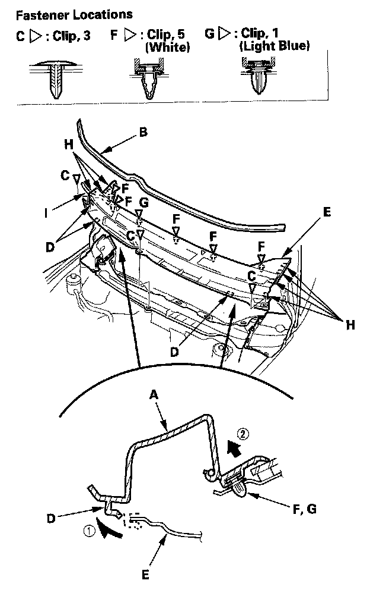
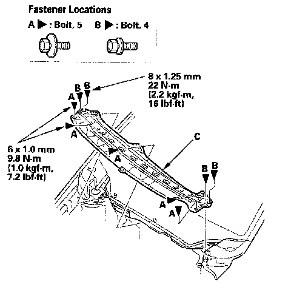
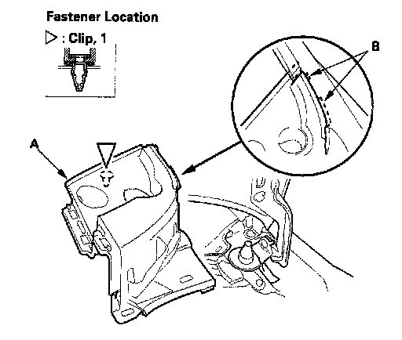

Cowl Moulding / Trim: Service and Repair
Cowl Cover ReplacementNOTE: Take care not to scratch the body.
1. Turn on the wiper switch, and move the windshield wiper arms 90 degrees.

2. Remove the center cowl cover (A).
1. Remove the hood rear seal (B) by pulling it out.
2. Remove the clips (C).
3. Release three front hooks (D) from the edge of the under-cowl panel (E).
4. Detach the clips (F, G) by carefully pulling the cover up, then remove the cover by releasing the hooks (H). Take care not to scratch the body.
3. Disconnect the windshield washer tube (I).

4. If necessary, remove the bolts (A, B), then remove the under-cowl panel (C).
5. Remove these items:
- Windshield wiper arms
- Front fender trim, both sides

6. Detach the clips by carefully pulling the side cowl cover (A) up, then remove the cover by releasing the hooks (B) from the front fender. Take care not to scratch the body. Repeat this step for the other side cowl cover, and disconnect the windshield washer tube.
7. Install the parts in the reverse order of removal, and note these items:
- Check if the clips are damaged or stress-whitened, and if necessary, replace them with new ones.
- Make sure the washer tubes are connected securely.
- Push the clips into place securely.